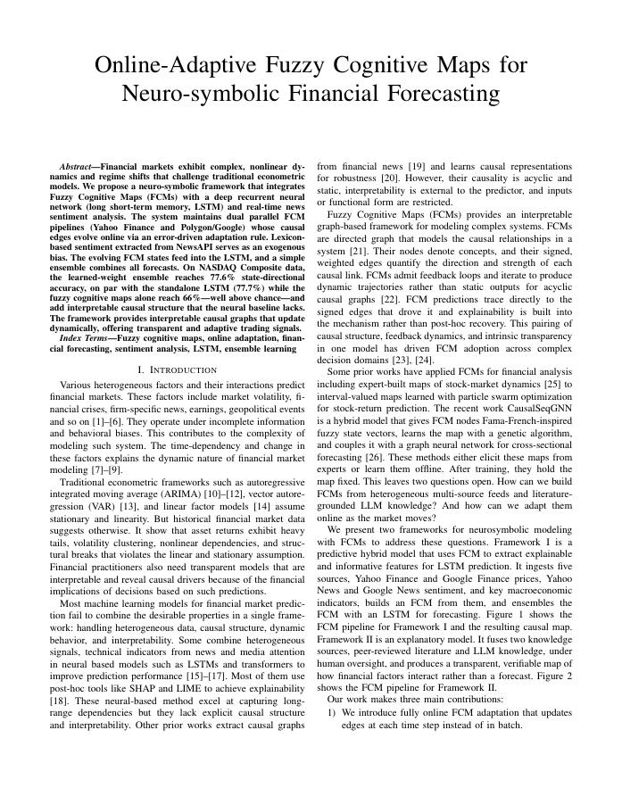

PDF · 10 pagesOnline-Adaptive Fuzzy Cognitive Maps for Neuro-symbolic Financial Forecasting
Financial markets shift regime faster than a fixed model can follow, and the models that follow them best are the hardest to interrogate. This work pairs Fuzzy Cognitive Maps, directed graphs whose signed edges are the explanation, with an LSTM and live news sentiment. Two parallel FCM pipelines (Yahoo Finance and Polygon/Google) adapt their causal edges online through an error-driven Hebbian rule, with Loughran–McDonald lexicon sentiment injected as an exogenous bias. A second, explanatory framework grows a map outward from a seed concept using peer-reviewed literature and LLM-proposed links, every edge carrying a citation a human can check.
| Model | State-dir. acc. | Test MSE |
|---|---|---|
| FCM (Yahoo Finance) | 66.0% | 0.054 |
| FCM (Google Finance) | 65.6% | 0.054 |
| LSTM (standalone baseline) | 77.7% | 0.035 |
| Ensemble (learned weights) | 77.6% | 0.035 |